Agentes de IA que cuidan tu red. Explicado tan fácil que cualquiera lo entiende.
¡Hola! Yo te guío 👋
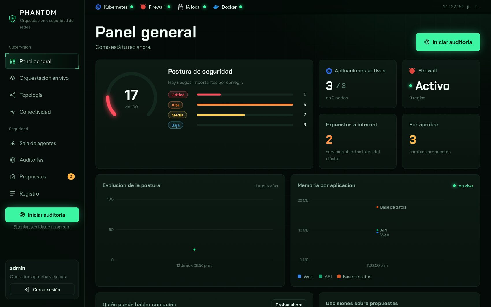
☸️Kubernetes😈Firewall FreeBSD🤖4 agentes de IA🧠IA local Mistral✅Tú decides
Código del proyectogithub.com/SergiusYT/Phantom-IA
¡Hola! Soy Fanti
El fantasmita de PHANTOM. Te acompaño en todo el manual.
Este manual es para cualquier persona, aunque nunca haya tocado una red ni un servidor. No necesitas saber programar. Solo necesitas saber usar un navegador (como Firefox o Chrome) y hacer clic.
📖
Léelo en orden
Primero entiendes la idea, después ves cada pantalla.
🟠
Busca los círculos
En las capturas, los círculos naranjas con número señalan dónde mirar.
👻
Sigue a Fanti
Cuando veas a Fanti, hay un consejo importante.
¿Qué hay en este manual?
1¿Qué es PHANTOM AI?💡
2Conoce al equipo🤖
3¿Cómo trabajan?🔄
4¿Por qué es seguro?🛡️
5Antes de empezar🔌
6Entrar al sistema🔑
7Panel general📊
8Orquestación en vivo📦
9Topología (el mapa)🗺️
10Conectividad📶
11Auditoría y Sala de agentes🕵️
12Auditorías e informes📋
13Propuestas: aprobar y aplicar✅
14Registro🗄️
15Simular la caída de un agente💥
16Modo observador👀
17Tu primera vez en 8 pasos🚀
18Colores y símbolos🚦
19¿Algo salió mal?🆘
20Palabras raras (glosario)📚
21Video y código del proyecto🎬
1
¿Qué es PHANTOM AI?
La idea completa en un minuto.
💡
En una frasePHANTOM AI es un sistema con 4 robots de inteligencia artificial que revisan una red de computadores, encuentran problemas de seguridad y proponen cómo arreglarlos. Pero nada se arregla hasta que una persona dice "sí".
Imagina un edificio 🏢
La forma más fácil de entender PHANTOM es pensar en un edificio de apartamentos:
💂
Firewall FreeBSD
El portero
Está en la puerta. Decide quién entra desde la calle (Internet) y por qué puerta. Si deja una puerta abierta que no se usa, es peligroso.
🏢
Kubernetes
El edificio y su administrador
Guarda las aplicaciones en "apartamentos" y las mantiene funcionando. Si una se cae, la vuelve a levantar sola.
🤖
Agentes de IA
Los vigilantes
Cuatro robots que recorren el edificio, revisan todo y escriben un informe con lo que está mal y cómo arreglarlo.
🧑💼
Tú (operador)
El jefe
Lees lo que proponen los vigilantes y decides: aprobar o rechazar. Sin tu "sí", nada cambia.
FANTI DICE¿Para qué sirve todo esto? Para que una red sea más segura sin que tengas que ser experto. Los robots hacen el trabajo difícil de revisar; tú solo tomas la decisión final.
2
Conoce al equipo
Cada pieza del sistema, como si fuera una persona.
🤖
Los 4 agentes (los robots vigilantes)
Cada agente tiene un solo trabajo. Trabajan en fila, como en una cadena: uno le pasa su resultado al siguiente.
📡
Agente 1
Recolector: "el que mira"
Da una vuelta por todo: mira las aplicaciones, mira las reglas del portero y prueba qué puertas abren y cuáles no. Junta toda esa información.
🩺
Agente 2
Analista: "el doctor"
Revisa si algo está enfermo: una aplicación caída, una que se reinicia mucho, un servicio que no responde. Dice la causa probable.
🕵️
Agente 3
Auditor: "el detective"
Busca peligros de seguridad: puertas abiertas de más, la caja fuerte a la vista, aplicaciones que se hablan sin permiso.
📐
Agente 4
Planificador: "el arquitecto"
Toma los problemas encontrados y escribe el plan para arreglarlos, explicando por qué funciona cada cambio.
Los ayudantes
🧠
IA local (Mistral)
El cerebro
Una inteligencia artificial que vive dentro del sistema (no en Internet). Ayuda a los agentes a explicar las cosas en palabras.
🔐
Controlador seguro
El de las llaves
El único que puede hacer cambios. Pero solo hace los cambios de una lista permitida y solo si tú los aprobaste.
🧭
Coordinador
El jefe de turno
Despierta a cada agente en el momento justo, le pasa la información y cierra la auditoría al final.
FANTI DICEUn truco para recordarlo: mira 📡 → revisa la salud 🩺 → busca peligros 🕵️ → hace el plan 📐 → tú decides 🧑💼.
¿Los robots duermen? 😴¡Sí! Los agentes no están encendidos todo el tiempo. Kubernetes los "despierta" cuando pides una auditoría, cada uno hace su trabajo y luego desaparece. Así no gastan recursos ni quedan expuestos. En la pantalla verás "Dormido: nace al auditar".
3
¿Cómo trabajan?
De "revisa mi red" a "listo, arreglado y comprobado".
🔄
Cada vez que presionas Iniciar auditoría, pasa esto, siempre en el mismo orden:
1
📡
Recolecta
El recolector mira la red y prueba las puertas.
2
🩺
Analiza
El analista busca cosas rotas o enfermas.
3
🕵️
Audita
El auditor busca peligros de seguridad.
4
📐
Propone
El planificador escribe cómo arreglar cada cosa.
5
🧑💼
Tú apruebas
Lees la propuesta y dices sí o no.
6
🔧
Aplica y comprueba
El controlador hace el cambio y prueba que todo siga funcionando.
Los pasos 2 y 3 ocurren al mismo tiempo: el doctor y el detective trabajan en paralelo para ir más rápido.
¿Y si el arreglo sale mal? ↩️
LA REGLA DE OROLa inteligencia artificial explica, pero no decide. Los problemas se detectan con reglas fijas y cada cambio necesita tu aprobación. Aunque la IA dijera algo raro, los resultados serían los mismos.
4
¿Por qué es seguro?
Un sistema que cuida la red no puede ser un peligro él mismo.
🛡️
👓
Los robots solo miran
Los agentes tienen "llaves de solo lectura". Pueden ver, pero no pueden cambiar nada, aunque quisieran.
📃
Lista de cambios permitidos
Solo existen 3 tipos de arreglo posibles. Cualquier otra orden se ignora.
✋
Una persona siempre decide
Nada se aplica sin que un operador lo apruebe. Queda guardado quién y cuándo.
💾
Siempre hay copia
Antes de cambiar algo, se guarda cómo estaba. Si hace falta, se puede volver atrás con un clic.
🚪
La puerta de mantenimiento nunca se cierra
El puerto 22 (por donde se administra el portero) está protegido: PHANTOM nunca lo bloquea, para no quedarse afuera.
🏠
La IA vive en casa
El cerebro (Mistral) corre dentro del sistema. La información de la red no sale a Internet.
Los 3 arreglos que PHANTOM sabe hacer
Arreglo
En palabras sencillas
¿Cómo comprueba que sirvió?
🧱Segmentación
Pone paredes entre apartamentos: la Web solo habla con la API, y la API solo con los Datos.
La caja fuerte deja de verse desde fuera del edificio.
La API sigue llegando a los datos.
🚪Cerrar una puerta del firewall
El portero cierra una puerta que estaba abierta sin necesidad (ej. la 8081).
Esa puerta queda cerrada; las de la página (80 y 443) siguen abiertas.
5
Antes de empezar
Encender el sistema y saber con qué usuario entrar.
🔌
1Enciende todo (lo hace el encargado técnico)
PHANTOM necesita que estén prendidas sus piezas: la máquina virtual con el firewall FreeBSD, el "edificio" Kubernetes y la plataforma. Para no hacerlo a mano, hay un solo comando que revisa y enciende todo en orden:
En la terminal, dentro de la carpeta del proyecto:make up Va mostrando una lista con ✔ verdes a medida que cada pieza queda lista y abre el navegador al final.
2Abre la página
En el navegador escribe esta dirección y presiona Enter:
http://localhost:8088
3Elige con qué usuario entrar
Usuario
Contraseña
¿Qué puede hacer?
👑admin
phantom-admin
Operador. Ve todo, inicia auditorías, aprueba, ejecuta y revierte cambios.
👀observador
phantom-viewer
Solo mirar. Ve todas las pantallas, pero no puede aprobar ni cambiar nada.
OJOEstas contraseñas son del laboratorio de clase. PHANTOM está hecho para una red de práctica aislada; no se debe conectar a una red real de una empresa sin cambiar las contraseñas.
6
Entrar al sistema
La portada, el inicio de sesión y cómo está organizada la pantalla.
🔑
La portada
Es lo primero que ves. Explica en pocas palabras qué hace PHANTOM y muestra un dibujo animado del tráfico pasando por el firewall.
localhost:8088
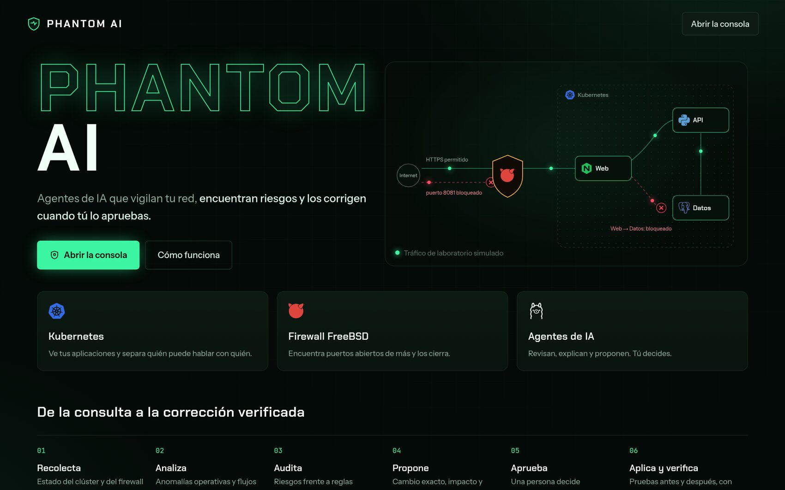
1234
1Abrir la consola: el botón para entrar al sistema.
2Cómo funciona: baja a una explicación de los pasos.
3Dibujo en vivo: el tráfico pasa por el firewall; lo rojo es lo bloqueado.
4Las 3 piezas: Kubernetes, Firewall FreeBSD y Agentes de IA.
Iniciar sesión
localhost:8088 · Iniciar sesión
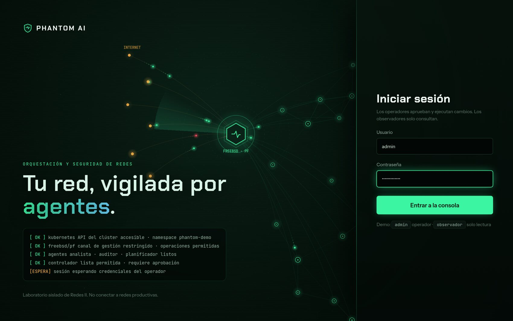
12345
1Escribe tu usuario (por ejemplo admin).
2Escribe tu contraseña. Se ve con puntitos para que nadie la lea.
3Haz clic en Entrar a la consola.
4Recordatorio de los dos usuarios de prueba.
5Lista que muestra que cada pieza está lista ([ OK ]). Si dice usuario o contraseña incorrectos, revisa mayúsculas y vuelve a intentar.
Así se organiza la pantalla 🧭
Después de entrar, todas las pantallas tienen la misma forma. Apréndela una vez y ya sabes moverte por todo:
localhost:8088/#/panel
1234567
1Menú "Supervisión": pantallas para mirar cómo está la red (Panel general, Orquestación en vivo, Topología, Conectividad).
2Menú "Seguridad": pantallas de los agentes y sus resultados (Sala de agentes, Auditorías, Propuestas, Registro). El número naranja dice cuántas propuestas esperan tu decisión.
3Barra de luces: Kubernetes, Firewall, IA local y Docker. verde = funciona, rojo = algo no responde.
4Reloj con la hora actual.
5Iniciar auditoría: el botón más importante. Despierta a los agentes para que revisen la red.
6Simular la caída de un agente: una prueba para ver cómo Kubernetes recupera a un robot que falla (capítulo 15).
7Tu usuario y tu rol, y el botón Cerrar sesión.
7
Panel general
"¿Cómo está mi red ahora?" en una sola mirada.
📊
Panel general
12345678
1Postura de seguridad: una nota de 0 a 100, como en el colegio. Más alta = más segura. Aquí sale 17: la red tiene problemas importantes.
2Problemas por gravedad:Crítica, Alta, Media y Baja, con cuántos hay de cada una.
3Aplicaciones activas: cuántas están funcionando (3 de 3) y en cuántos computadores (nodos).
4Firewall: si el portero está activo y cuántas reglas tiene.
5Expuestos a internet: cuántas cosas se pueden alcanzar desde fuera. Lo ideal es pocas.
6Por aprobar: arreglos esperando tu decisión.
7Evolución de la postura: cómo ha cambiado la nota en cada auditoría. Si sube, ¡vas bien!
8Memoria por aplicación: cuánta memoria usa cada una, en vivo.
FANTI DICESi bajas en esta pantalla verás más cuadros: "Quién puede hablar con quién" (con un botón Probar ahora), las decisiones sobre propuestas y el estado de las aplicaciones y del firewall.
Más abajo en el Panel
Panel general (página completa)
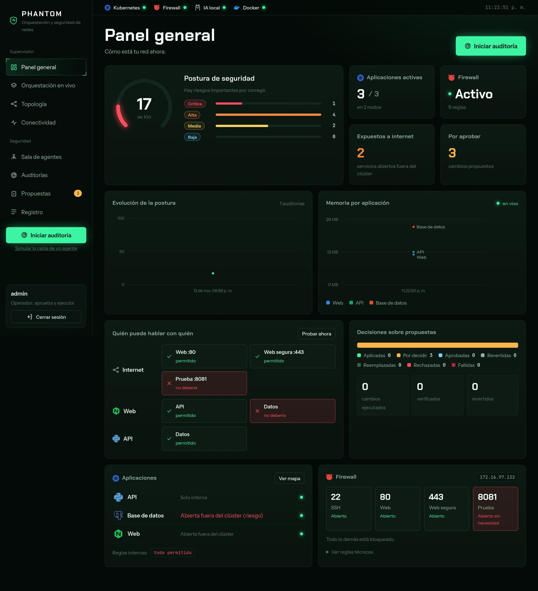
El Panel completo: arriba el resumen, abajo las pruebas de conexión, las decisiones y el detalle de aplicaciones y firewall.
8
Orquestación en vivo
"¿Qué está corriendo ahora y dónde?"
📦
Esta pantalla muestra todas las cajas donde viven las aplicaciones, unas dentro de otras, como muñecas rusas 🪆: Docker contiene a Kubernetes, y Kubernetes contiene a las aplicaciones y a los agentes.
Orquestación en vivo
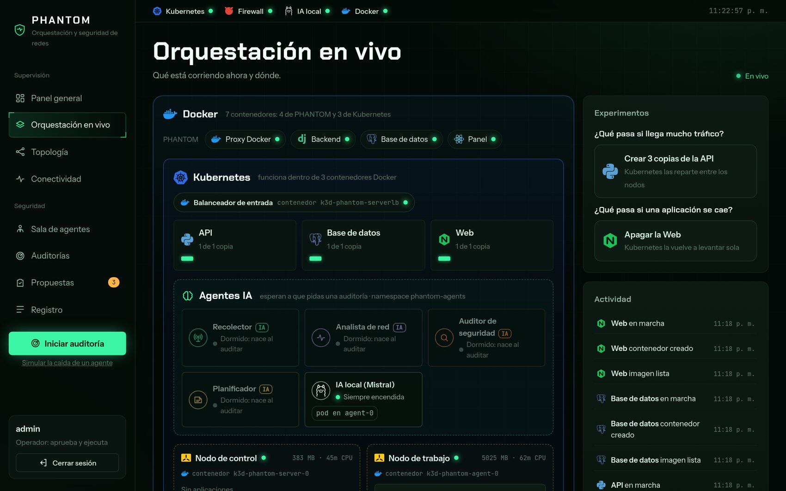
1234567
1Docker: la caja más grande. Aquí corren las partes de PHANTOM (Panel, Backend, Base de datos, Proxy).
2Kubernetes: el "edificio". Funciona dentro de 3 contenedores de Docker.
3Aplicaciones: API, Base de datos y Web, con cuántas copias tiene cada una (1 de 1 = todo bien).
4Agentes IA: los 4 robots. Cuando no hay auditoría dicen "Dormido: nace al auditar". La IA local (Mistral) siempre está encendida.
5Nodos: los "computadores" de Kubernetes (nodo de control y nodo de trabajo), con su memoria y procesador.
6Experimentos: botones para jugar con Kubernetes y ver cómo reacciona.
7Actividad: lo último que pasó, con la hora (por ejemplo, "Web en marcha").
🐍🐍🐍
"Crear 3 copias de la API"
Simula que llega mucha gente. Kubernetes crea 3 copias de la API y las reparte entre los computadores. Si lo presionas otra vez, vuelve a 1.
💥➡️🆙
"Apagar la Web"
Simula que una aplicación se cae. Mira cómo Kubernetes la vuelve a levantar sola en segundos, sin que nadie haga nada.
Los experimentos solo puede usarlos el operador (admin).
9
Topología: el mapa
Por dónde viaja la información, dibujado como un mapa de metro.
🗺️
Arriba a la derecha hay dos pestañas: Aplicación (el camino del tráfico) y Agentes y gestión (cómo se organizan los robots). Toca cualquier pieza del mapa para ver qué es.
Vista "Aplicación" + botón Probar flujos
Topología · Aplicación
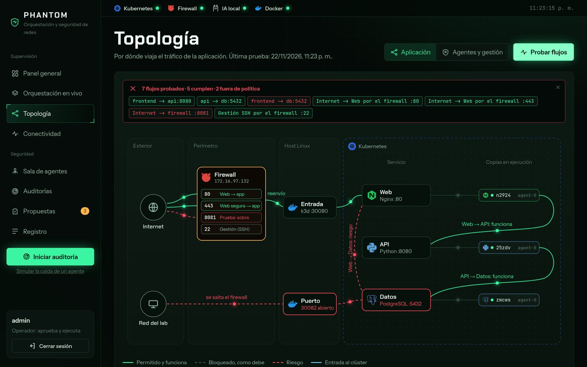
12345678
1Pestañas para cambiar de vista.
2Probar flujos: envía mensajes de prueba por cada camino y los anima en el mapa.
3Resultado: cuántos caminos se probaron y cuántos cumplen. Rojo = "fuera de política" (pasa algo que no debería).
4Internet (la calle) y Red del lab.
5Firewall: las puertas 80 y 443 llevan a la página; la 8081 está abierta "de sobra" (peligro); la 22 es la de mantenimiento.
6Kubernetes: Web → API → Datos, que es el camino correcto.
7"Se salta el firewall": la base de datos se puede alcanzar por el puerto 30082 sin pasar por el portero. ¡Un riesgo!
8Leyenda de líneas: verde = permitido y funciona, gris punteado = bloqueado como debe, rojo punteado = riesgo.
Mientras prueba…
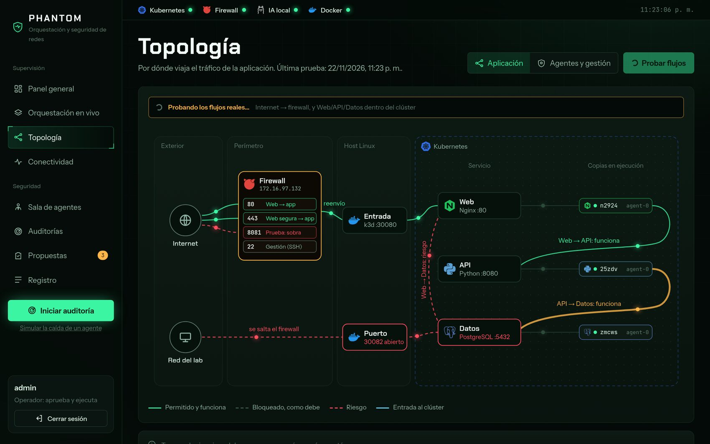
Los puntos viajan por las líneas mientras se prueba cada camino.
Antes de probar
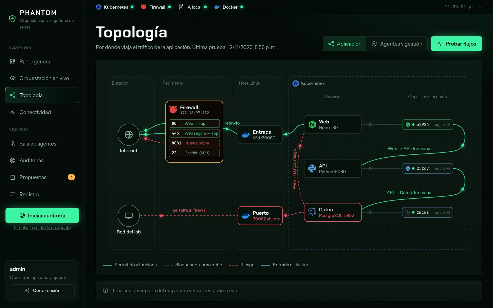
El mapa tranquilo, con la última prueba guardada.
Vista "Agentes y gestión"
Topología · Agentes y gestión
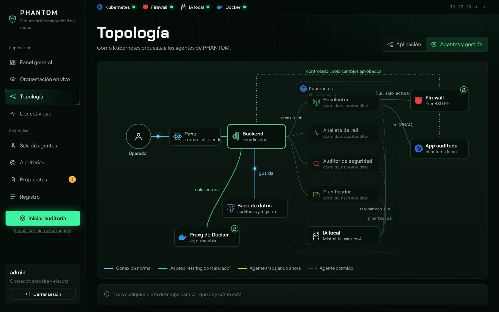
1234567
1Operador: tú.
2Panel: lo que estás viendo en pantalla.
3Backend (coordinador): el que crea a los agentes ("crea un Job").
4Los 4 agentes dentro de Kubernetes. Se ponen naranjas cuando trabajan.
5IA local: la usan los 4 para razonar.
6Firewall y App auditada, con candado: acceso restringido.
7Base de datos y Proxy de Docker: guardan el historial y miran sin cambiar.
10
Conectividad
"¿Pasa lo que debe pasar y se bloquea lo que debe bloquearse?"
📶
Aquí PHANTOM hace pruebas reales: toca cada puerta del firewall y prueba si cada aplicación puede hablar con las otras. Es como revisar que cada llave abra solo la puerta que le toca.
Conectividad
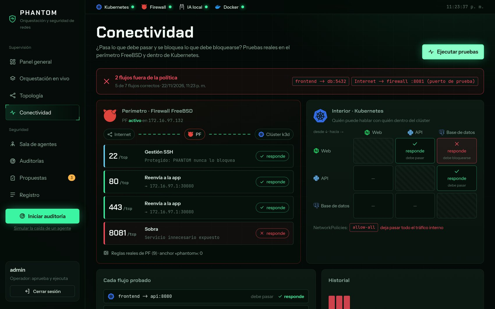
12345678
1Ejecutar pruebas: vuelve a probar todo ahora mismo.
2Resumen: aquí 5 de 7 caminos están bien y 2 están mal.
3Perímetro (firewall FreeBSD): el camino Internet → PF (portero) → clúster.
4Cada puerta: 22 (mantenimiento, protegida), 80 y 443 (la página, deben responder).
5Puerta 8081 en rojo: responde, pero no debería. Es un servicio de sobra expuesto.
6Tabla "quién habla con quién": Web→API debe pasar ✅; Web→Base de datos debería bloquearse y responde ❌.
7allow-all: la regla actual deja pasar todo el tráfico interno. Por eso Web llega a los datos.
8Cada flujo probado en una lista, y el Historial de pruebas anteriores.
¿CÓMO LEER UNA CASILLA?Cada casilla dice dos cosas: lo que pasó (responde / no responde) y lo que debería pasar (debe pasar / debe bloquearse). Si coinciden, sale verde. Si no coinciden, sale rojo.
11
Auditoría y Sala de agentes
Mira a los robots trabajar en vivo, como en un chat.
🕵️
1Presiona "Iniciar auditoría"
Está en el menú de la izquierda (y también arriba a la derecha en el Panel). Al presionarlo, PHANTOM te lleva solo a la Sala de agentes.
Sala de agentes · inicio
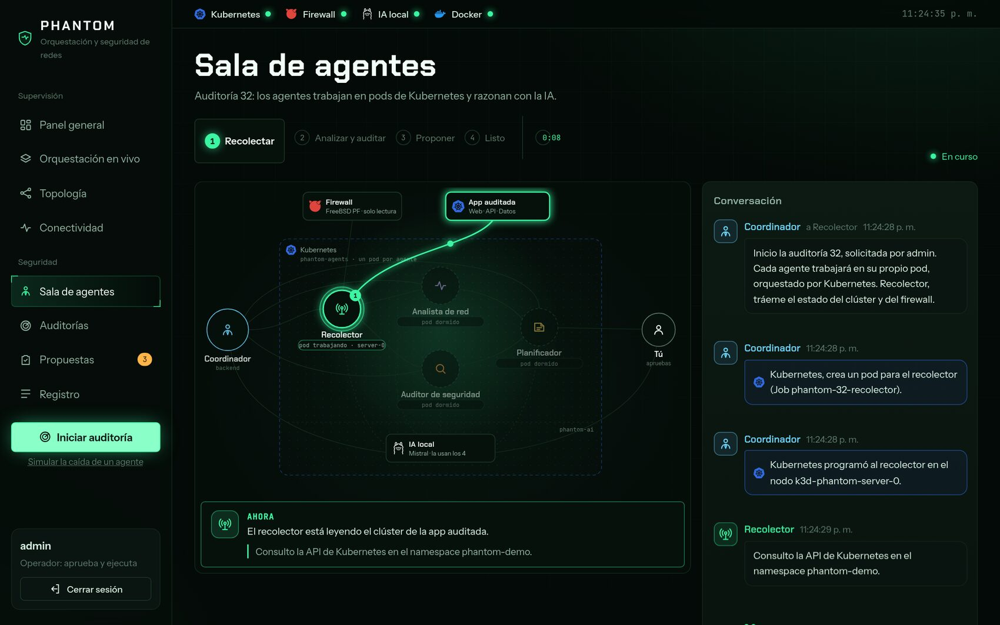
12345678
1Etapas: 1 Recolectar → 2 Analizar y auditar → 3 Proponer → 4 Listo. La que está iluminada es la actual.
2Cronómetro: cuánto tiempo lleva la auditoría.
3Coordinador: el que reparte el trabajo.
4El agente que trabaja brilla y dice "pod trabajando". Los demás dicen "pod dormido".
5IA local: cuando un agente le pregunta algo, dice "pensando…".
6"Ahora": una frase sencilla de lo que está pasando en este momento.
7Conversación: los mensajes de los agentes, como un chat de WhatsApp, con hora.
8Tú (a la derecha del mapa): al final, las propuestas llegan a ti para que decidas.
2Mira cómo trabajan
Los agentes van apareciendo uno por uno. Cada vez que uno "habla", su mensaje sale en la conversación y su dibujo se ilumina en el mapa. Una auditoría completa tarda unos 7 u 8 minutos, porque la IA piensa con calma cada respuesta.
Sala de agentes · analizando y auditando
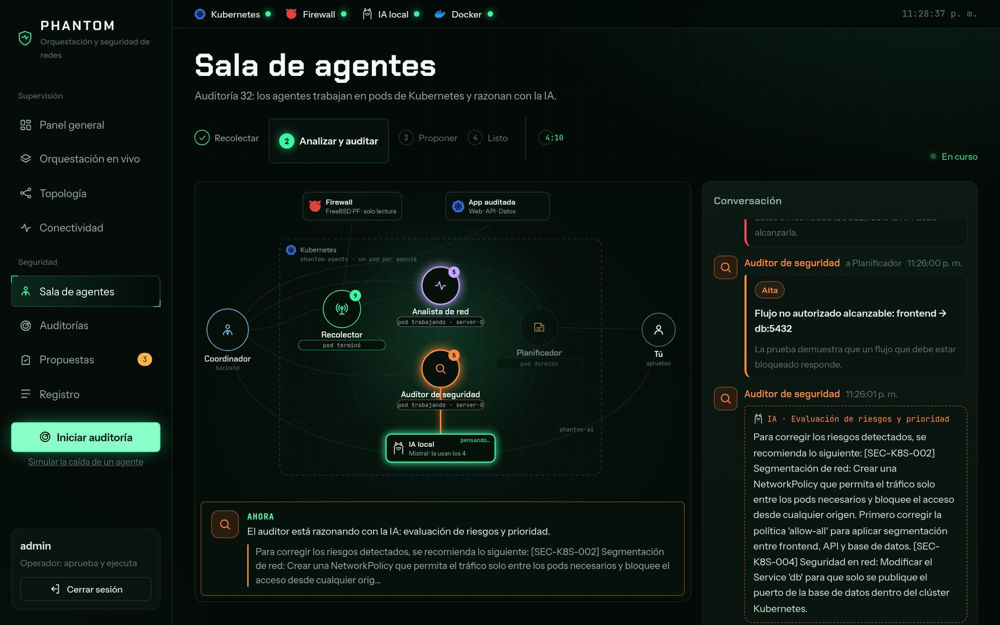
123456
1Ya pasó la etapa 1 (con ✔) y ahora va en Analizar y auditar.
2El Analista (el doctor) y…
3…el Auditor (el detective) trabajan al mismo tiempo. El número pequeño es cuántos mensajes llevan.
4La línea naranja muestra que el auditor está preguntándole a la IA.
5Un hallazgo: un problema con su gravedad (aquí "Alta").
6Mensaje marcado IA: la explicación que escribió la inteligencia artificial, en palabras.
FANTI DICE¿Te aburriste de esperar? Puedes ir a otras pantallas: la auditoría sigue sola. Aparecerá una burbuja flotante abajo a la derecha que te muestra el avance y te trae de vuelta a la Sala con un clic.
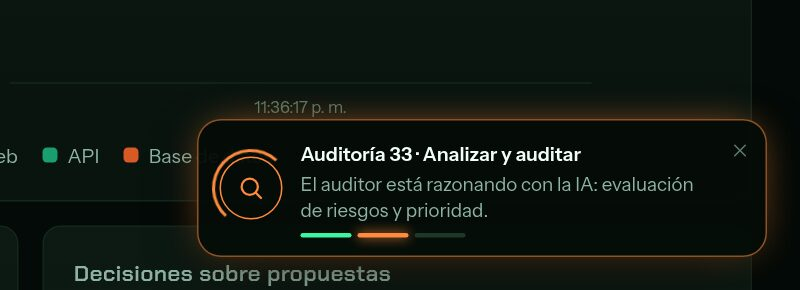
3Cuando termina
Sala de agentes · terminada
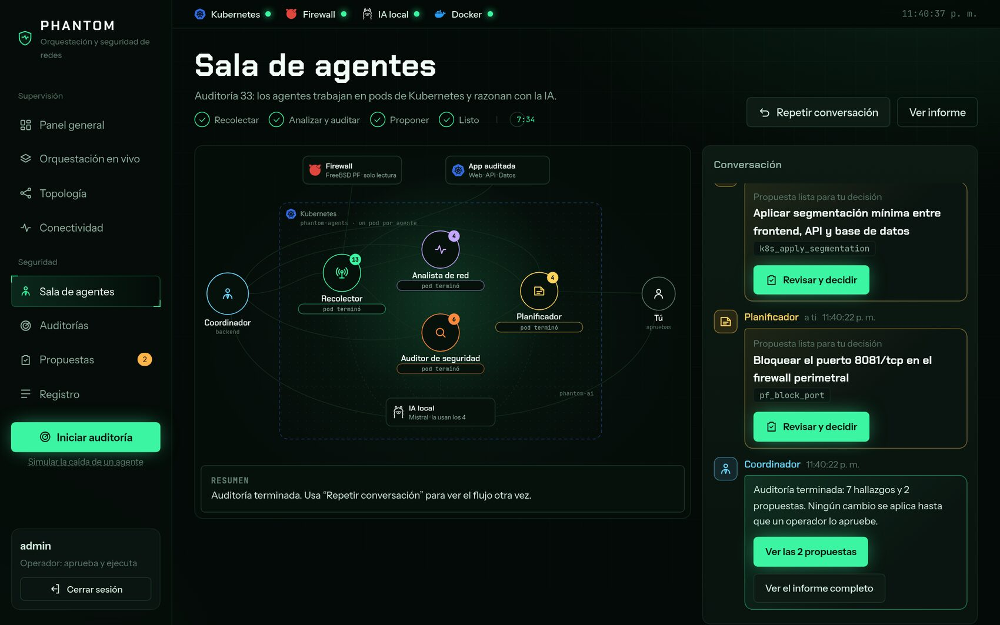
123456
1Las 4 etapas con ✔: la auditoría terminó. El cronómetro dice cuánto tardó.
2Repetir conversación vuelve a mostrar todo el chat desde el principio (ideal para explicarlo a alguien). Ver informe abre el resultado completo.
3Todos los agentes dicen "pod terminó": Kubernetes ya los apagó. Hicieron su trabajo y desaparecieron.
4El Planificador te dejó propuestas listas para tu decisión. El botón Revisar y decidir te lleva directo a cada una.
5Resumen: la auditoría terminó.
6El Coordinador cierra: cuántos hallazgos (problemas) y cuántas propuestas hubo. Recuerda: "Ningún cambio se aplica hasta que un operador lo apruebe."
12
Auditorías e informes
El historial de todas las revisiones y el informe de cada una.
📋
Lista de auditorías
Auditorías
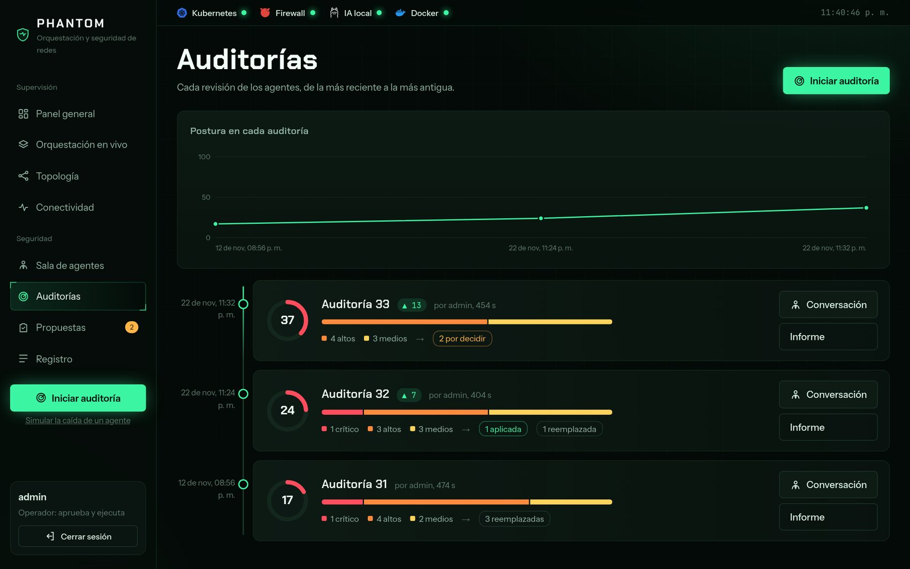
12345
1Postura en cada auditoría: la línea de la nota. ¡Si sube, la red está cada vez más segura!
2La nota de esa auditoría. Aquí pasó de 17 → 24 → 37 a medida que aplicamos arreglos.
3Cuántos problemas hubo de cada color y cuántas propuestas quedan por decidir.
4Conversación abre la Sala de esa auditoría; Informe abre su resultado.
5Las auditorías viejas quedan guardadas, de la más nueva a la más antigua.
El informe de una auditoría
Informe de auditoría
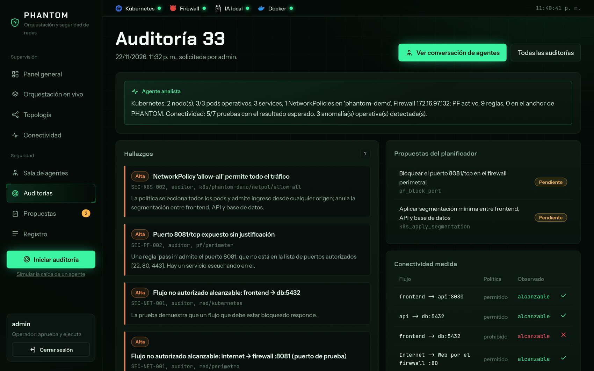
1234567
1Número de la auditoría, fecha y quién la pidió.
2Ver conversación de agentes te lleva a la Sala; Todas las auditorías vuelve a la lista.
3Resumen del agente analista: cómo está todo en una frase (cuántas aplicaciones, reglas del firewall, pruebas correctas).
4Hallazgos: la lista de problemas encontrados, del más grave al menos grave.
5Cada hallazgo tiene su gravedad (Alta, Crítica…), qué agente lo encontró y una explicación sencilla. Ej.: "Puerto 8081 expuesto sin justificación".
6Propuestas del planificador: los arreglos sugeridos. Clic en una para revisarla.
7Conectividad medida: qué caminos se probaron, si estaban permitidos o prohibidos, y qué pasó.
13
Propuestas: aprobar y aplicar
Aquí tú eres el jefe. Nada se aplica sin tu permiso.
✅
Propuestas
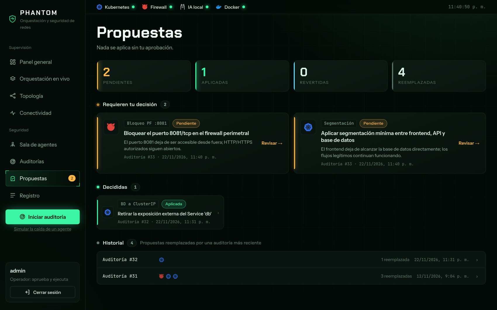
12345
1Contadores: cuántas están Pendientes, Aplicadas, Revertidas y Reemplazadas.
2Requieren tu decisión: las que esperan tu "sí" o "no".
3Cada tarjeta dice qué arreglo es (ej. Bloqueo PF :8081), qué cambiará y de qué auditoría salió. Presiona Revisar → para abrirla.
4Decididas: las que ya aprobaste y se aplicaron (o rechazaste).
5Historial: propuestas viejas que fueron reemplazadas por una auditoría más reciente.
Abrir una propuesta
Propuesta
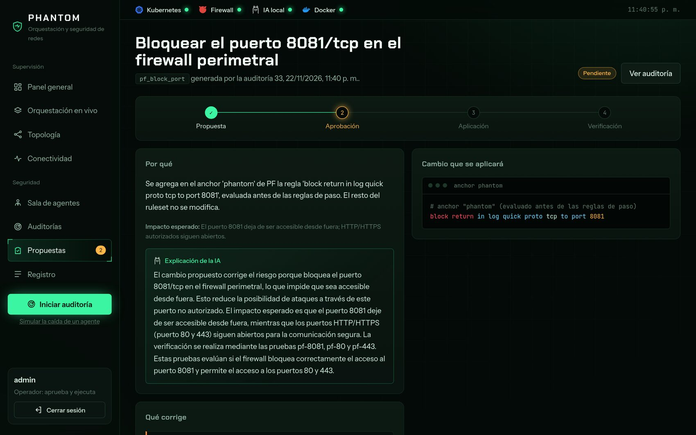
123456
1Qué se va a hacer, en el título. Aquí: "Bloquear el puerto 8081/tcp en el firewall perimetral".
4Por qué: la razón del arreglo y el impacto esperado (qué cambia para los usuarios).
5Explicación de la IA: el cerebro Mistral lo explica en palabras normales, incluso cómo se comprobará.
6Cambio que se aplicará: la orden exacta, para quien sepa leerla. No necesitas entenderla: para eso está la explicación.
El camino de una propuesta 🛤️
1Aprobar
Si estás de acuerdo con el arreglo, presiona Aprobar. Si no, presiona Rechazar y no pasa nada.
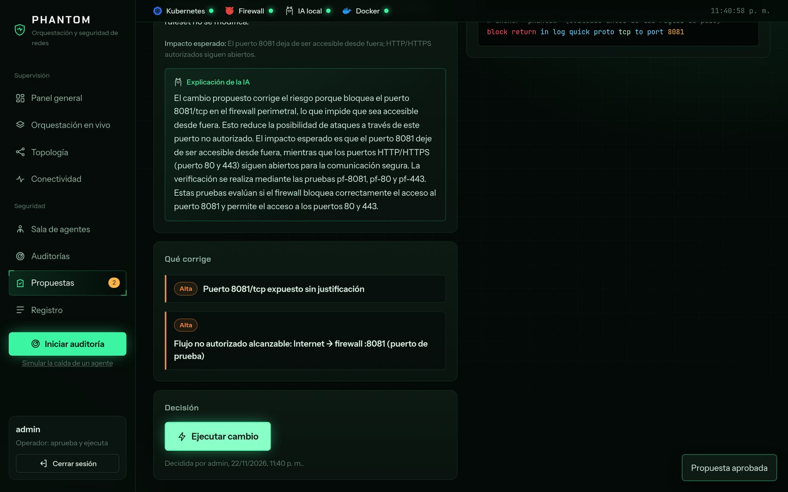
12
1Después de aprobar aparece el botón grande Ejecutar cambio. Todavía no se ha cambiado nada.
2Mensajito de confirmación: "Propuesta aprobada".
2Ejecutar el cambio
Presiona Ejecutar cambio. El sistema pregunta "¿Continuar?" para que no lo hagas por accidente. Acepta. Verás "Aplicando y verificando…" unos segundos.
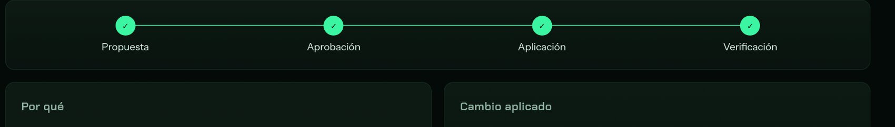
¡Los 4 pasos en verde! Propuesta → Aprobación → Aplicación → Verificación. Arriba a la derecha dice Aplicada.
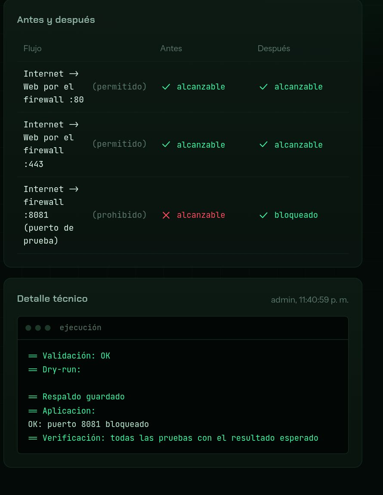
123
1Antes y después: PHANTOM probó cada camino antes y después del cambio.
2La página (puertas 80 y 443) siguió funcionando: ✔ antes y ✔ después. ¡No se rompió nada!
3La puerta 8081: antes se podía entrar, ahora está bloqueada. ¡Arreglado!
Detalle técnico (abajo)Muestra cada paso que hizo el controlador: Validación OK → Respaldo guardado → Aplicación: puerto 8081 bloqueado → Verificación: todas las pruebas con el resultado esperado.
3¿Me arrepentí? Revertir
Si el cambio ya está aplicado y quieres volver a como estaba, presiona Revertir cambio. PHANTOM usa la copia que guardó antes y deja todo igual que al principio.
Antes y después 🔍
Después del arreglo, vuelve a Conectividad y presiona Ejecutar pruebas. Así compruebas con tus propios ojos que el problema desapareció.
Conectividad después del arreglo
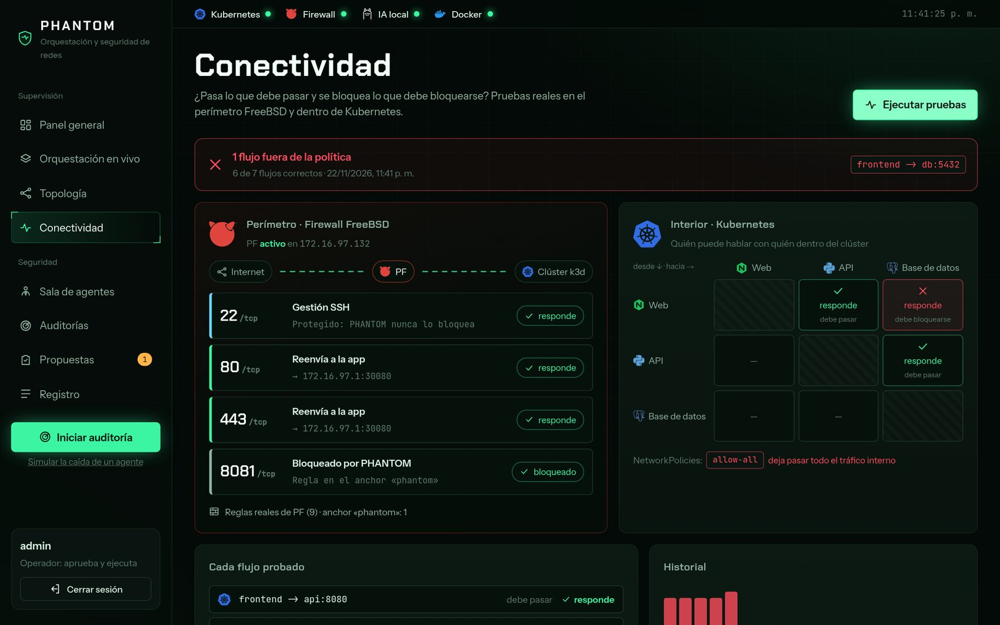
123
1Antes había 2 caminos mal; ahora solo 1 (6 de 7 correctos).
2La puerta 8081 ahora dice bloqueado y "Bloqueado por PHANTOM".
3Queda en rojo Web → Base de datos. Ese se arregla aprobando la otra propuesta (la segmentación). ¡Te toca a ti decidir!
Panel general después
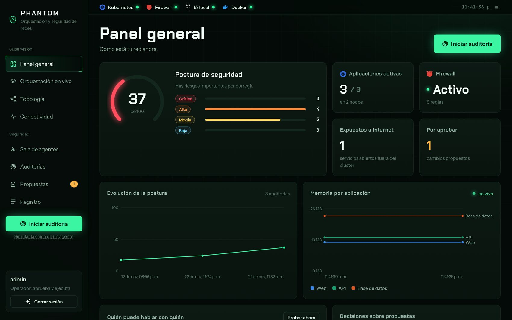
1
(1) La nota de seguridad subió de 17 a 37 después de los arreglos. ¡La red ya está más segura!
14
Registro
La memoria de PHANTOM: todo lo que pasó queda guardado.
🗄️
Pestaña "Base de datos"
Es un dibujo de cómo se guarda la información. Cada caja es una "tabla" (como una hoja de Excel) y las líneas muestran qué se relaciona con qué. Toca una tabla para ver lo que tiene dentro.
Registro · Base de datos
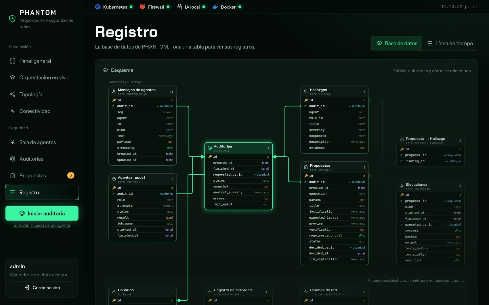
1234567
1Pestañas: Base de datos y Línea de tiempo.
2Auditorías: el centro. Todo cuelga de aquí.
3Mensajes de agentes: la conversación de la Sala.
4Agentes (pods): cada robot que nació, sus intentos y su resultado.
5Hallazgos: los problemas encontrados.
6Propuestas: los arreglos sugeridos.
7Ejecuciones: cada arreglo aplicado, con su copia de respaldo y sus pruebas antes y después.
Pestaña "Línea de tiempo"
Una lista ordenada por hora de todo lo que pasó: quién inició sesión, qué auditoría se hizo, qué se aprobó y qué se aplicó. Sirve para saber quién hizo qué y cuándo.
Registro · Línea de tiempo
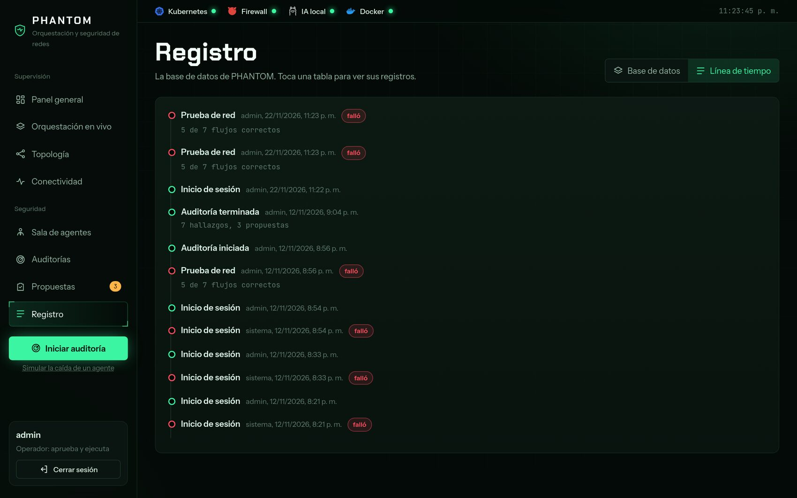
15
Simular la caída de un agente
¿Qué pasa si un robot se "desmaya" a mitad del trabajo?
💥
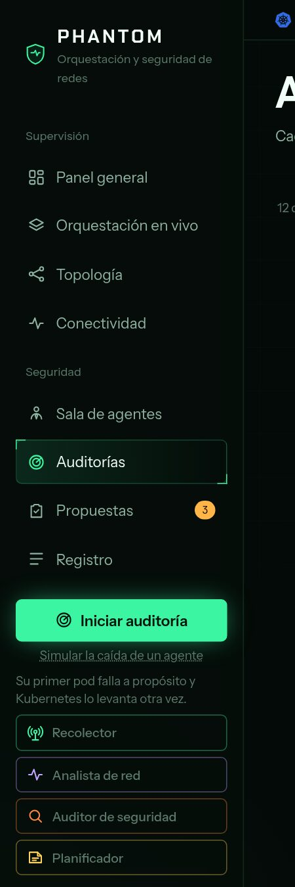
Debajo de Iniciar auditoría está el enlace Simular la caída de un agente. Al abrirlo aparecen 4 botones, uno por cada robot.
Haz clic en "Simular la caída de un agente". 👆
Elige un agente, por ejemplo Auditor. 🕵️
Empieza una auditoría normal, pero ese robot falla a propósito la primera vez. 💥
Kubernetes lo nota y lo vuelve a crear solo.🔁
La auditoría termina bien, como si nada. 🎉
¿PARA QUÉ SIRVE?Para demostrar que el sistema no se rompe si una pieza falla. Es una de las grandes ventajas de Kubernetes: reintenta solo. En la Sala verás el "intento 2" del agente que se cayó. Solo el operador (admin) ve estos botones.
16
Modo observador
Para quien solo necesita mirar, sin tocar nada.
👀
Si entras con el usuario observador, ves exactamente las mismas pantallas, pero los botones de aprobar, ejecutar, revertir, los experimentos y la simulación de caídas quedan apagados.
Propuesta vista por el observador
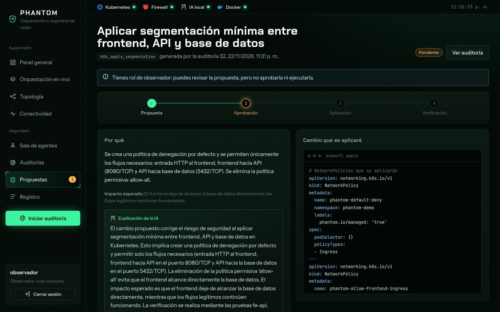
1234
1El título de la propuesta y la auditoría que la creó.
2Aviso azul: "Tienes rol de observador: puedes revisar la propuesta, pero no aprobarla ni ejecutarla."
3Los 4 pasos de toda propuesta: Propuesta → Aprobación → Aplicación → Verificación. El paso actual se pinta de naranja.
4Abajo a la izquierda dice observador · solo consulta, y no aparece "Simular la caída de un agente".
👑
admin (operador)
Mira ✅ · Inicia auditorías ✅ · Aprueba y ejecuta ✅ · Revierte ✅ · Experimentos ✅
👀
observador
Mira ✅ · Aprueba y ejecuta ❌ · Revierte ❌ · Experimentos ❌ · Simular caídas ❌
17
Tu primera vez en 8 pasos
La receta completa, de principio a fin.
🚀
Enciende el sistema con make up y abre http://localhost:8088. 🔌
Presiona Abrir la consola y entra con admin / phantom-admin. 🔑
Mira el Panel general: anota la nota de seguridad (por ejemplo, 17 de 100). 📊
Ve a Conectividad y presiona Ejecutar pruebas para ver qué está en rojo. 📶
Presiona Iniciar auditoría y mira a los agentes en la Sala (unos 7-8 minutos). 🕵️
Ve a Propuestas, abre una y lee el "Por qué" y el "Cambio que se aplicará". 📄
Presiona Aprobar y luego Ejecutar cambio. Espera el mensaje "aplicado y verificado". ✅
Vuelve a Conectividad y al Panel: lo rojo pasó a verde y la nota sube. 🎉
PARA REPETIR LA DEMOSi quieres volver a dejar la red "con problemas" para mostrarlo otra vez, el encargado técnico escribe en la terminal: make demo-reset pf-reset
18
Colores y símbolos
El "idioma de colores" de PHANTOM.
🚦
Lo que ves
Qué significa
Verde
Todo bien. Funciona o se comporta como debe.
Rojo
Problema o riesgo. Algo pasa cuando no debería, o no responde.
Naranja / Ámbar
Atención: algo espera tu decisión, o un agente está trabajando ahora.
Gris punteado
Bloqueado a propósito (está bien) o agente dormido.
Crítica
El problema más grave. Arreglar primero.
Alta
Grave. Arreglar pronto.
Media
Importante, pero puede esperar un poco.
Baja
Detalle menor.
✅responde / debe pasar
La conexión funciona y está permitida.
❌responde / debe bloquearse
La conexión funciona pero NO debería. Es un riesgo.
IA
Esta parte la escribió o explicó la inteligencia artificial.
🔒Candado
Acceso restringido: solo se puede leer o solo hacer cambios permitidos.
19
¿Algo salió mal?
Los problemas más comunes y qué hacer.
🆘
🚫 La página no abre (localhost:8088 no carga)
El sistema está apagado. Pídele al encargado técnico que escriba make up y espera a que todas las líneas salgan con ✔.
🔑 "Usuario o contraseña incorrectos"
Revisa que escribiste todo en minúsculas: admin y phantom-admin.
🔴 Una luz de arriba está roja
Esa pieza no responde. Si es Firewall, la máquina virtual de FreeBSD puede estar apagada. Si es IA local, el cerebro está arrancando: espera un minuto. Con make up se revisa y repara todo.
🐢 La auditoría tarda mucho
Es normal: unos 7-8 minutos, porque la IA corre en el mismo computador, sin tarjeta gráfica. Puedes seguir usando otras pantallas mientras tanto.
🔘 Los botones de Aprobar o Ejecutar están apagados
Entraste como observador. Cierra sesión y entra como admin.
↩️ Dice "La verificación falló: el cambio se revirtió"
¡Tranquilo! El arreglo rompía algo, así que PHANTOM lo deshizo solo. Tu red quedó como estaba. Inicia otra auditoría para obtener una propuesta nueva.
📭 "Sin propuestas" o "Todo al día"
No hay nada pendiente. Si quieres nuevas propuestas, inicia otra auditoría.
🗂️ Una propuesta dice "Reemplazada"
Una auditoría más nueva generó una propuesta actualizada para el mismo problema. Usa siempre la más reciente.
20
Palabras raras
El glosario más sencillo del mundo.
📚
RedComputadores conectados que se envían información.
FirewallEl "portero" de la red: decide qué entra y qué no.
FreeBSD / PFFreeBSD es el sistema donde vive el portero; PF es el programa que hace de portero.
PuertoUna "puerta" numerada de un computador. La 80 y la 443 son para páginas web.
KubernetesPrograma que organiza y cuida aplicaciones; si una se cae, la levanta.
PodUna cajita dentro de Kubernetes donde vive una aplicación o un agente.
NodoUn computador (real o virtual) que forma parte de Kubernetes.
Docker / contenedorUna caja que lleva un programa con todo lo que necesita para funcionar.
Agente de IAUn programa con un trabajo concreto que usa inteligencia artificial para explicar.
IA local / MistralLa inteligencia artificial que vive dentro del sistema, sin Internet.
AuditoríaUna revisión completa de la red hecha por los agentes.
HallazgoUn problema que encontraron los agentes.
PropuestaUn arreglo sugerido para corregir uno o más hallazgos.
RevertirDeshacer un cambio y volver a como estaba antes.
SegmentaciónPoner "paredes" para que cada aplicación solo hable con quien debe.
NodePortUna forma de dejar una aplicación visible desde fuera de Kubernetes.
OperadorLa persona que puede aprobar y aplicar cambios.
Postura de seguridadLa nota de 0 a 100 que dice qué tan segura está la red.
21
Video y código del proyecto
Todo PHANTOM AI en un solo lugar: GitHub.
🎬
Escanea el código con la cámara de tu celular o entra al enlace:
Un video corto que muestra PHANTOM AI funcionando: cómo se entra, cómo trabajan los agentes en la Sala, cómo se aprueba un arreglo y cómo la red queda más segura. Ideal si quieres verlo antes de usarlo.
💻
Proyecto completo
Todo el código
El panel, el backend, los 4 agentes, la configuración de Kubernetes y la del firewall FreeBSD, con las instrucciones para instalarlo y encenderlo.
¡LISTO!Ya sabes todo lo necesario para usar PHANTOM AI. ¿Quieres verlo en acción? Mira el video en GitHub. Recuerda: los robots revisan, la IA explica y tú decides. 👻💚